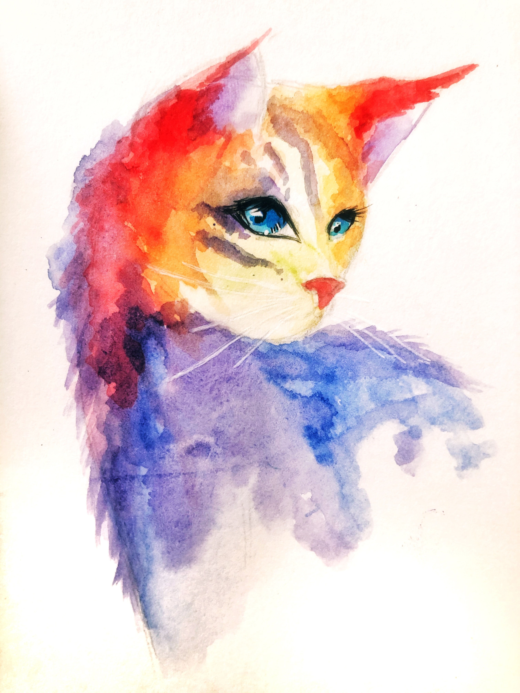

web
html
css
javascript
#1 aaa
#2 bbb
#3 ccc
html공부 시작합니다
우리는 지금부터
html공부
를 시작하게 되었습니다.
여러가지 태스트를 통해 기능적인 측면을 알아보도록 합시다.
일러스트레이션
설명을 보조하기 위해 삽입하는 삽화를 뜻한다.
보다 넓은 의미로 확장하여 삽화가 아닌 그림도 포괄적으로 '일러스트' 혹은 '일러스트레이션'이라 부르기도 한다. 일러스트레이터는 일러스트레이션을 제작하는 사람을 뜻한다.
